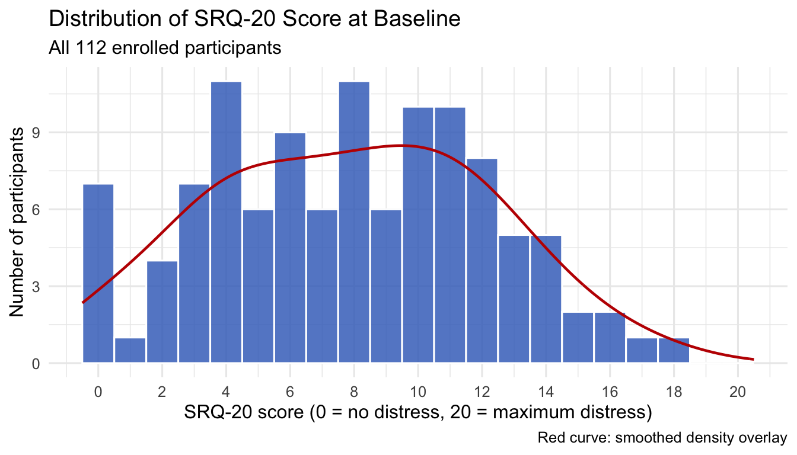
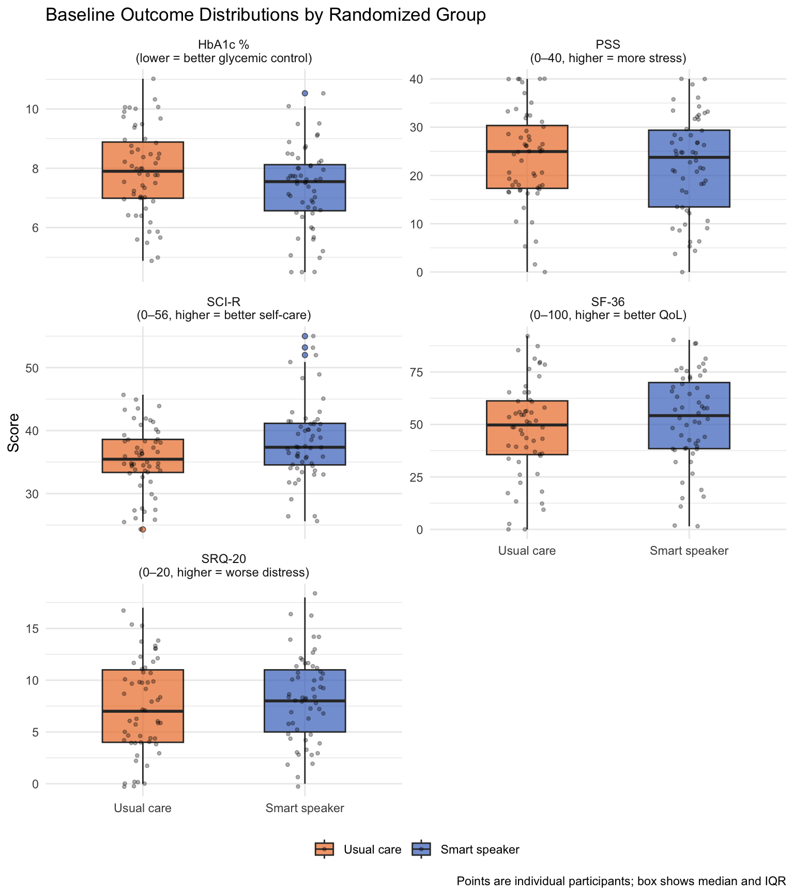
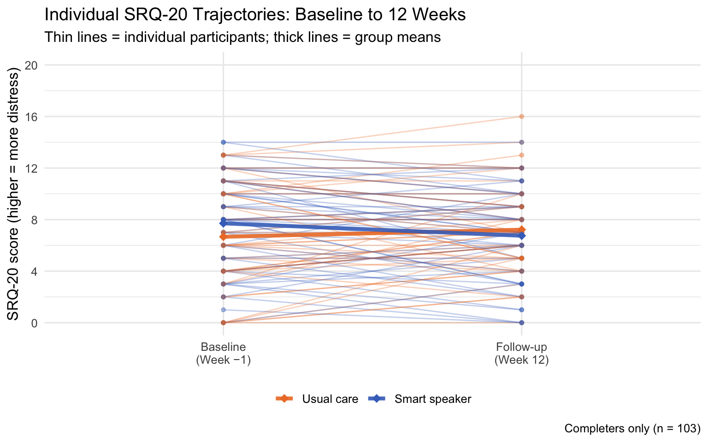
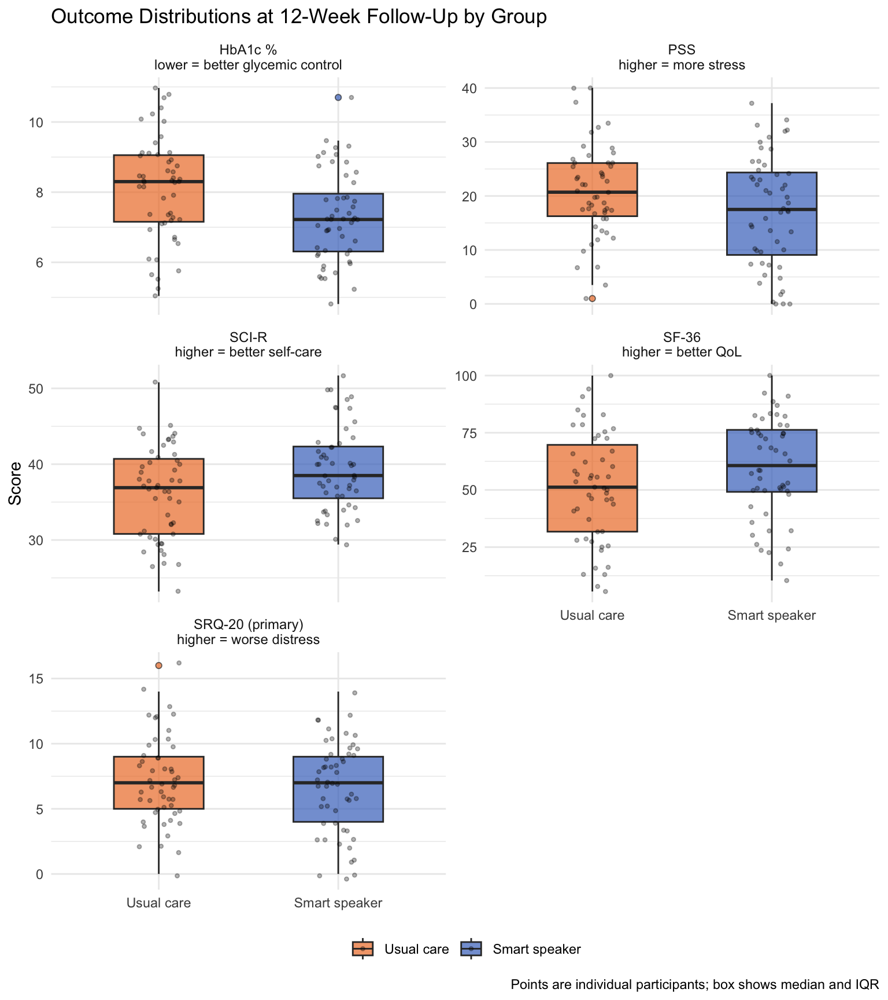
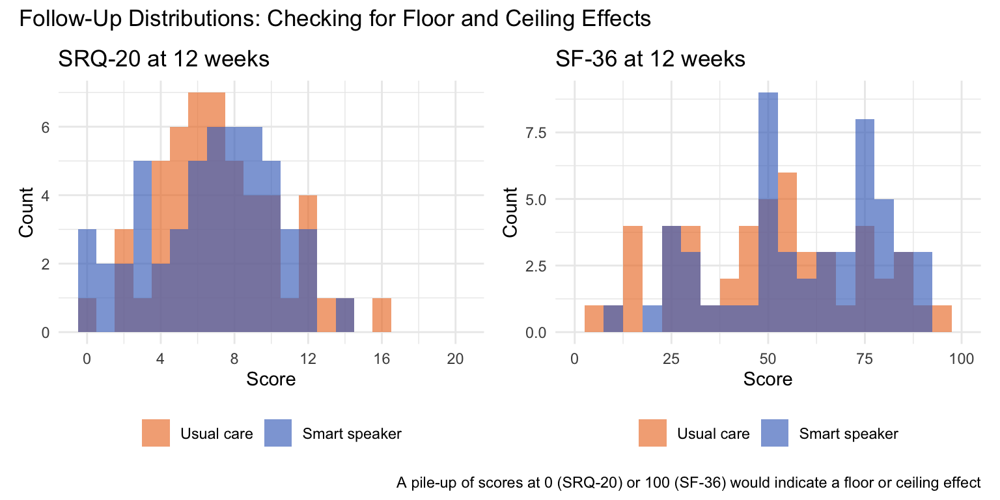

library(dplyr)
library(ggplot2)
library(patchwork) # combines multiple ggplot panels into one figure4 Module 3: Data Visualization
CRP 241 — IVAM-ED Teaching Case
4.1 Overview
Visualization is not decoration — it is analysis. Plots reveal distributional features (skewness, outliers, floor effects), patterns across groups, and individual variability that summary statistics conceal.
By the end of this module you should be able to:
- Plot the distribution of a continuous variable with a histogram and density curve.
- Compare distributions between two groups with side-by-side box plots.
- Visualize change from baseline using an individual-trajectory plot.
- Describe what each plot tells you about the data that a table cannot.
4.2 ———————————————————————
4.3 Setup
dat <- readRDS("../data/ivam_working.rds")
# Completers only (those with follow-up data) — used in several plots
completers <- filter(dat, missing_12wk == 0)4.4 ———————————————————————
4.5 1. Distribution of the Primary Outcome at Baseline
The SRQ-20 is the primary outcome: a 20-item mental-distress questionnaire. Before looking at treatment effects, we should understand what its distribution looks like in this sample.
ggplot(dat, aes(x = srq20_0)) +
geom_histogram(binwidth = 1, fill = "#4472C4", color = "white", alpha = 0.85) +
geom_density(aes(y = after_stat(count)), color = "#C00000", linewidth = 0.8,
adjust = 1.2) +
scale_x_continuous(breaks = seq(0, 20, 2), limits = c(-0.5, 20.5)) +
labs(
title = "Distribution of SRQ-20 Score at Baseline",
subtitle = "All 112 enrolled participants",
x = "SRQ-20 score (0 = no distress, 20 = maximum distress)",
y = "Number of participants",
caption = "Red curve: smoothed density overlay"
) +
theme_minimal(base_size = 12)
Note
What to notice:
- The distribution is right-skewed: most participants have low scores but a tail of participants have scores above 10.
- There is no sharp floor at 0 (the distribution is not dominated by zeros), meaning mental distress is present at a detectable level throughout this sample.
- The SRQ-20 is an integer sum score — that is why the bars fall at whole numbers.
4.6 ———————————————————————
4.7 2. Baseline Distributions by Group
Do the two groups look similar at baseline? We would hope so — randomization should produce roughly equivalent groups, but it does not guarantee perfect balance in every variable.
# Reshape to long format so we can facet across all five outcomes at once
outcomes_long <- dat |>
select(participant_id, group_label, srq20_0, sf36_0, sci_r_0, pss_0, hba1c_0) |>
tidyr::pivot_longer(
cols = c(srq20_0, sf36_0, sci_r_0, pss_0, hba1c_0),
names_to = "outcome",
values_to = "score"
) |>
mutate(outcome = recode(outcome,
srq20_0 = "SRQ-20\n(0–20, higher = worse distress)",
sf36_0 = "SF-36\n(0–100, higher = better QoL)",
sci_r_0 = "SCI-R\n(0–56, higher = better self-care)",
pss_0 = "PSS\n(0–40, higher = more stress)",
hba1c_0 = "HbA1c %\n(lower = better glycemic control)"
))
ggplot(outcomes_long, aes(x = group_label, y = score, fill = group_label)) +
geom_boxplot(alpha = 0.7, outlier.shape = 21, outlier.size = 1.5,
width = 0.5) +
geom_jitter(width = 0.12, alpha = 0.3, size = 0.9) +
scale_fill_manual(values = c("Usual care" = "#ED7D31", "Smart speaker" = "#4472C4")) +
facet_wrap(~ outcome, scales = "free_y", ncol = 2) +
labs(
title = "Baseline Outcome Distributions by Randomized Group",
x = NULL,
y = "Score",
fill = NULL,
caption = "Points are individual participants; box shows median and IQR"
) +
theme_minimal(base_size = 11) +
theme(legend.position = "bottom", strip.text = element_text(size = 9))
Note
What to notice:
- The groups look broadly similar across all five outcomes — this is the expected result of randomization.
- The SRQ-20 box for the smart speaker group is shifted slightly upward relative to the usual care group (the intervention group started with slightly higher distress). This is chance imbalance; the ANCOVA adjustment in Module 5 will account for it.
- The jittered individual points show the spread within each group. Box plots can hide multimodal distributions or extreme outliers that individual points reveal.
4.8 ———————————————————————
4.9 3. Change from Baseline: Individual Trajectories
The most informative visualization for a pre-post trial is an individual trajectory plot: one line per participant, connecting their baseline score to their follow-up score. This shows both the direction and magnitude of change for each person, not just the group average.
# Reshape to long: one row per participant per time point
srq20_long <- completers |>
select(participant_id, group_label, srq20_0, srq20_12) |>
tidyr::pivot_longer(
cols = c(srq20_0, srq20_12),
names_to = "timepoint",
values_to = "srq20"
) |>
mutate(
timepoint = recode(timepoint,
srq20_0 = "Baseline\n(Week −1)",
srq20_12 = "Follow-up\n(Week 12)"
),
timepoint = factor(timepoint,
levels = c("Baseline\n(Week −1)", "Follow-up\n(Week 12)"))
)
ggplot(srq20_long,
aes(x = timepoint, y = srq20, group = participant_id, color = group_label)) +
geom_line(alpha = 0.3, linewidth = 0.5) +
geom_point(alpha = 0.4, size = 1.2) +
# Add group mean lines on top
stat_summary(aes(group = group_label), fun = mean,
geom = "line", linewidth = 1.5, alpha = 0.9) +
stat_summary(aes(group = group_label), fun = mean,
geom = "point", size = 3, shape = 18) +
scale_color_manual(values = c("Usual care" = "#ED7D31", "Smart speaker" = "#4472C4")) +
scale_y_continuous(limits = c(0, 20), breaks = seq(0, 20, 4)) +
labs(
title = "Individual SRQ-20 Trajectories: Baseline to 12 Weeks",
subtitle = "Thin lines = individual participants; thick lines = group means",
x = NULL,
y = "SRQ-20 score (higher = more distress)",
color = NULL,
caption = "Completers only (n = 103)"
) +
theme_minimal(base_size = 12) +
theme(legend.position = "bottom")
Note
What to notice:
- Both group means decline from baseline to follow-up — some improvement in mental distress even in the usual care group.
- The smart speaker group mean (blue) drops further than the usual care group mean (orange). The vertical distance between the thick lines at follow-up represents the unadjusted mean difference.
- Individual variability is large: some participants in both groups get worse, not better. The group-level treatment effect is a central tendency, not a guarantee for any individual.
- The crossing lines reveal that participants who started with high scores tend to show larger decreases — this is regression to the mean, which the ANCOVA model in Module 5 will address.
4.10 ———————————————————————
4.11 4. Comparing All Outcomes at Follow-Up
A side-by-side comparison of follow-up distributions across all outcomes gives an overview of where the intervention had an effect and where it did not.
followup_long <- completers |>
select(participant_id, group_label,
srq20_12, sf36_12, sci_r_12, pss_12, hba1c_12) |>
tidyr::pivot_longer(
cols = c(srq20_12, sf36_12, sci_r_12, pss_12, hba1c_12),
names_to = "outcome",
values_to = "score"
) |>
mutate(outcome = recode(outcome,
srq20_12 = "SRQ-20 (primary)\nhigher = worse distress",
sf36_12 = "SF-36\nhigher = better QoL",
sci_r_12 = "SCI-R\nhigher = better self-care",
pss_12 = "PSS\nhigher = more stress",
hba1c_12 = "HbA1c %\nlower = better glycemic control"
))
ggplot(followup_long, aes(x = group_label, y = score, fill = group_label)) +
geom_boxplot(alpha = 0.7, outlier.shape = 21, outlier.size = 1.5, width = 0.5) +
geom_jitter(width = 0.12, alpha = 0.3, size = 0.9) +
scale_fill_manual(values = c("Usual care" = "#ED7D31", "Smart speaker" = "#4472C4")) +
facet_wrap(~ outcome, scales = "free_y", ncol = 2) +
labs(
title = "Outcome Distributions at 12-Week Follow-Up by Group",
x = NULL,
y = "Score",
fill = NULL,
caption = "Points are individual participants; box shows median and IQR"
) +
theme_minimal(base_size = 11) +
theme(legend.position = "bottom", strip.text = element_text(size = 9))
Note
Direction guide for comparing groups:
- SRQ-20: Smart speaker group should be lower (less distress is better).
- SF-36 and SCI-R: Smart speaker group should be higher (more is better).
- PSS: Smart speaker group should be lower (less stress is better).
- HbA1c: Smart speaker group should be lower (lower % is better glycemic control).
The published trial found statistically significant effects on SRQ-20, SF-36, SCI-R, and HbA1c, but not on PSS (the CI for PSS crossed zero). Look at your plots: do any of the comparisons look visually similar (no clear separation), even if a difference exists?
4.12 ———————————————————————
4.13 5. Floor and Ceiling Effects
A floor effect occurs when many participants score at or near the lowest possible value — they cannot get lower, so the instrument cannot detect further improvement. A ceiling effect is the reverse. Either distorts the analysis.
p_srq <- ggplot(completers, aes(x = srq20_12, fill = group_label)) +
geom_histogram(binwidth = 1, position = "identity", alpha = 0.65) +
scale_x_continuous(limits = c(-0.5, 20.5), breaks = seq(0, 20, 4)) +
scale_fill_manual(values = c("Usual care" = "#ED7D31", "Smart speaker" = "#4472C4")) +
labs(title = "SRQ-20 at 12 weeks", x = "Score", y = "Count", fill = NULL) +
theme_minimal(base_size = 11) +
theme(legend.position = "bottom")
p_sf36 <- ggplot(completers, aes(x = sf36_12, fill = group_label)) +
geom_histogram(binwidth = 5, position = "identity", alpha = 0.65) +
scale_x_continuous(limits = c(0, 100), breaks = seq(0, 100, 25)) +
scale_fill_manual(values = c("Usual care" = "#ED7D31", "Smart speaker" = "#4472C4")) +
labs(title = "SF-36 at 12 weeks", x = "Score", y = "Count", fill = NULL) +
theme_minimal(base_size = 11) +
theme(legend.position = "bottom")
p_srq + p_sf36 +
plot_annotation(
title = "Follow-Up Distributions: Checking for Floor and Ceiling Effects",
caption = "A pile-up of scores at 0 (SRQ-20) or 100 (SF-36) would indicate a floor or ceiling effect"
)
Note
What to look for: Are scores piled up against the boundary of the scale? In the IVAM-ED data, mean SRQ-20 at follow-up is around 7, well above the floor of 0, so floor effects are not a major concern. The SF-36 mean is around 55, well below the ceiling of 100.
4.14 ———————————————————————
4.15 6. Practice Exercises
Change direction. For each of the five outcomes, write one sentence stating whether you expect the smart speaker group to have a higher or lower mean than the usual care group at follow-up, and why.
Regression to the mean. In the individual trajectory plot (Section 3), look at participants who started with SRQ-20 scores above 15. What tends to happen to their scores at follow-up? Does this happen in both groups? What does this tell you about interpreting within-group change?
Plot the PSS trajectories. Adapt the code from Section 3 to make an individual trajectory plot for the PSS (perceived stress) outcome. Does the visual separation between group means at follow-up look larger or smaller than for the SRQ-20? This anticipates the Module 4 finding that the PSS result was not statistically significant.
HbA1c change. Make a scatter plot of baseline HbA1c (
hba1c_0) on the x-axis against 12-week HbA1c (hba1c_12) on the y-axis, with points colored by group. Add a reference line for y = x (no change). Which points are above the line (got worse) and which are below (improved)?
4.16 ———————————————————————
4.17 Summary
In this module you:
- Described the shape and spread of the SRQ-20 baseline distribution (right-skewed, no floor effect).
- Compared baseline and follow-up distributions between the two groups with box plots and individual trajectory plots.
- Identified the direction of expected treatment effects for each outcome.
- Introduced floor and ceiling effects as a data-quality check.
- Observed regression to the mean in the trajectory plot — a key motivation for the ANCOVA model in Module 5.
Next: Module 4 will quantify what the plots show: group means, mean changes from baseline, 95% confidence intervals, and hypothesis tests.
4.18 ———————————————————————
4.19 Session Information
sessionInfo()R version 4.6.1 (2026-06-24)
Platform: aarch64-apple-darwin23
Running under: macOS Tahoe 26.5.2
Matrix products: default
BLAS: /Library/Frameworks/R.framework/Versions/4.6/Resources/lib/libRblas.0.dylib
LAPACK: /Library/Frameworks/R.framework/Versions/4.6/Resources/lib/libRlapack.dylib; LAPACK version 3.12.1
locale:
[1] C.UTF-8/C.UTF-8/C.UTF-8/C/C.UTF-8/C.UTF-8
time zone: America/New_York
tzcode source: internal
attached base packages:
[1] stats graphics grDevices datasets utils methods base
other attached packages:
[1] patchwork_1.3.2 ggplot2_4.0.3 dplyr_1.2.1
loaded via a namespace (and not attached):
[1] vctrs_0.7.3 cli_3.6.6 knitr_1.51 rlang_1.3.0
[5] xfun_0.60 purrr_1.2.2 renv_1.2.3 generics_0.1.4
[9] S7_0.2.2 jsonlite_2.0.0 labeling_0.4.3 glue_1.8.1
[13] htmltools_0.5.9 scales_1.4.0 rmarkdown_2.31 grid_4.6.1
[17] evaluate_1.0.5 tibble_3.3.1 fastmap_1.2.0 yaml_2.3.12
[21] lifecycle_1.0.5 compiler_4.6.1 RColorBrewer_1.1-3 htmlwidgets_1.6.4
[25] pkgconfig_2.0.3 tidyr_1.3.2 farver_2.1.2 digest_0.6.39
[29] R6_2.6.1 tidyselect_1.2.1 pillar_1.11.1 magrittr_2.0.5
[33] withr_3.0.3 tools_4.6.1 gtable_0.3.6